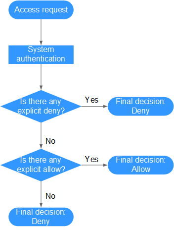
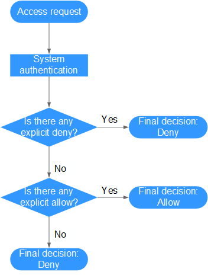

Policy Content
A fine-grained policy consists of the policy version (the Version field) and statement (the Statement field).
- Version: Distinguishes between role-based access control (RBAC) and fine-grained policies.
- 1.0: RBAC policies, which are preset in the system and used to grant permissions of each service as a whole. After such a policy is granted to a user, the user has all permissions of the corresponding service.
- 1.1: Fine-grained policies. A fine-grained policy consists of API-based permissions for operations on specific resource types. Fine-grained policies, as the name suggests, allow for more fine-grained control than RBAC policies. Users granted permissions of such a policy can only perform specific operations on the corresponding service. Fine-grained policies are classified into default and custom policies.
- Default policies: Preset common permission sets to control read and administrator permissions of different services.
- Custom policies: Permission sets created and managed by users as an extension and supplement to system-defined policies. For example, a custom policy can be created to allow users only to modify ECS specifications.
- Statement: Detailed information about a policy, containing the Effect and Action elements.
- Effect
Valid values for Effect include Allow and Deny. In a custom policy that contains both Allow and Deny statements, the Deny statements take precedence.
- Action
The value can be one or more resource operations.
The value format is Service name:Resource type:Action, for example, modelarts:exemlProject:create.
- Service name: service name. Only lowercase letters are supported, for example, modelarts.
- Resource type and Action: The values are case-insensitive, and the wildcard (*) are allowed. A wildcard (*) can represent all or part of information about resource types and actions for the specific service.
- Effect
Example Policies
- A policy can define a single permission, such as the permission to deny ExeML project deletion.
{ "Version": "1.1", "Statement": [ { "Effect": "Deny", "Action": [ "modelarts:exemlProject:delete" ] } ] } - A policy can define multiple permissions, such as the permissions to delete an ExeML version and an ExeML project.
{ "Version": "1.1", "Statement": [ { "Effect": "Allow", "Action": [ "modelarts:exemlProjectVersion:delete", "modelarts:exemlProject:delete" ] } ] }
Authentication Logic
IAM authenticates users according to the permissions that the users have been granted. The authentication logic is as follows:
Figure 1 Authentication logic


The actions in each policy bear the OR relationship.
- A user accesses the system and makes an operation request.
- The system evaluates all the permissions policies assigned to the user.
- In these policies, the system looks for explicit deny permissions. If the system finds an explicit deny that applies, it returns a decision of Deny, and the authentication ends.
- If no explicit deny is found, the system looks for allow permissions that would apply to the request. If the system finds an explicit allow permission that applies, it returns a decision of Allow, and the authentication ends.
- If no explicit allow permission is found, the system returns a decision of Deny, and the authentication ends.